87 92 780 Special Grease
87 92 780 Special Grease
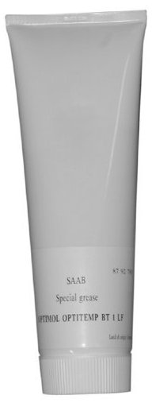
Specifications
Optimol Optitemp BT 1 LF. Cartridge 300 g.
Range of application
Inner drive joints (type - tripod), automatic transmission.
Packaging
1
Transport
No restrictions apply when transporting this product.
Directives
Product data sheet
1. IDENTIFICATION OF THE SUBSTANCE/PREPARATION AND THE COMPANY/UNDERTAKING
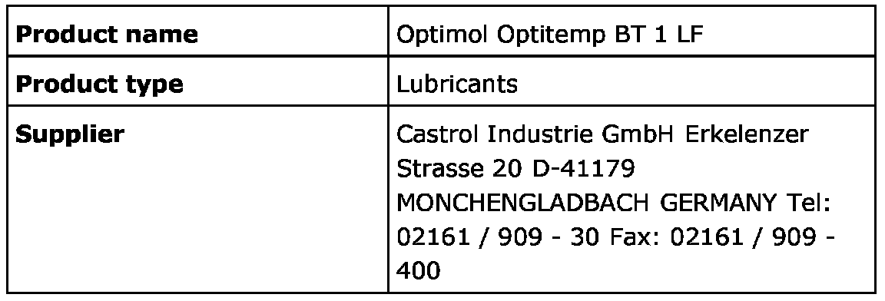
2. COMPOSITION/INFORMATION ON INGREDIENTS
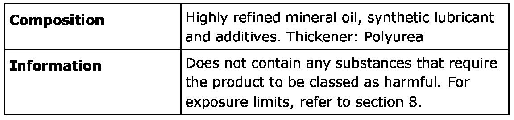
3. HAZARDS IDENTIFICATION
According to Swedish law, this product is not classified as hazardous.
4. FIRST AID MEASURES
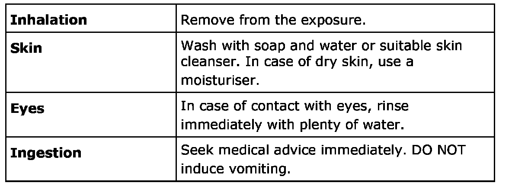
5. FIRE-FIGHTING MEASURES
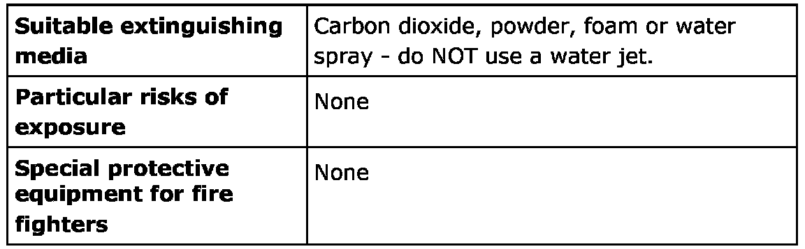
6. SPILLAGE/ACCIDENTAL DISCHARGE MEASURES
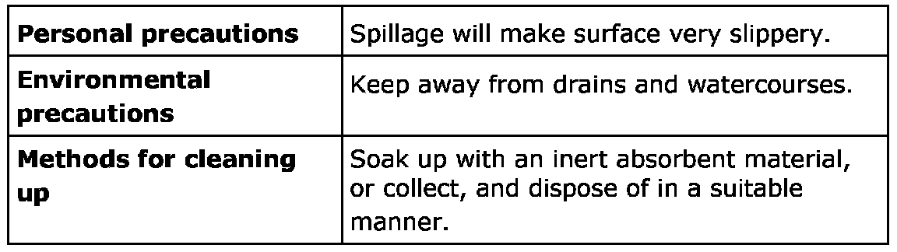
7. HANDLING AND STORAGE
8. EXPOSURE CONTROLS/PERSONAL PROTECTION
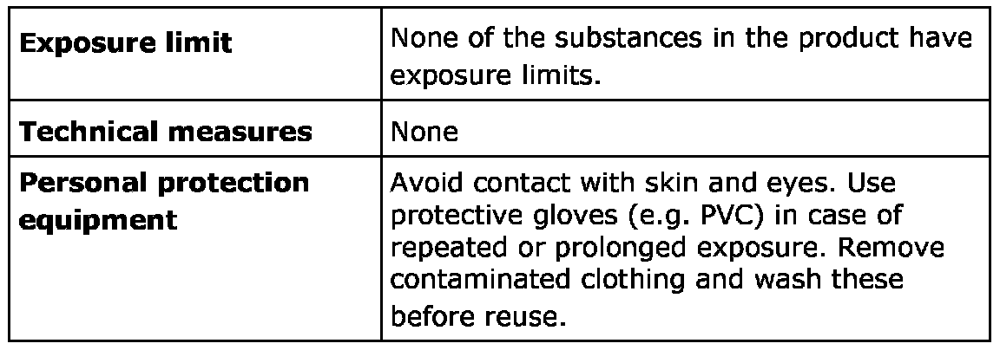
9. PHYSICAL AND CHEMICAL PROPERTIES
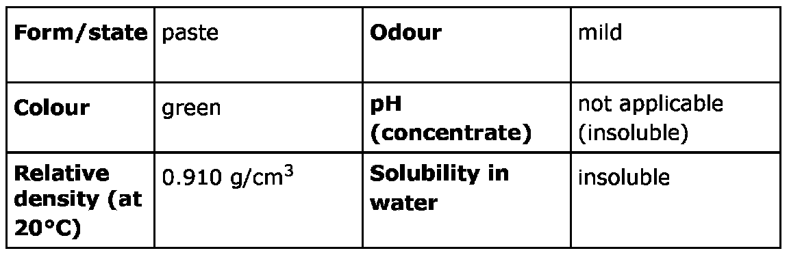
10. STABILITY AND REACTIVITY
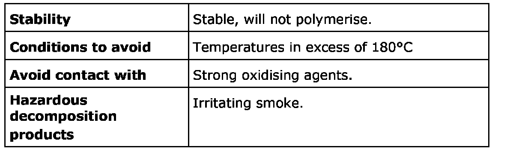
11. TOXICOLOGICAL INFORMATION
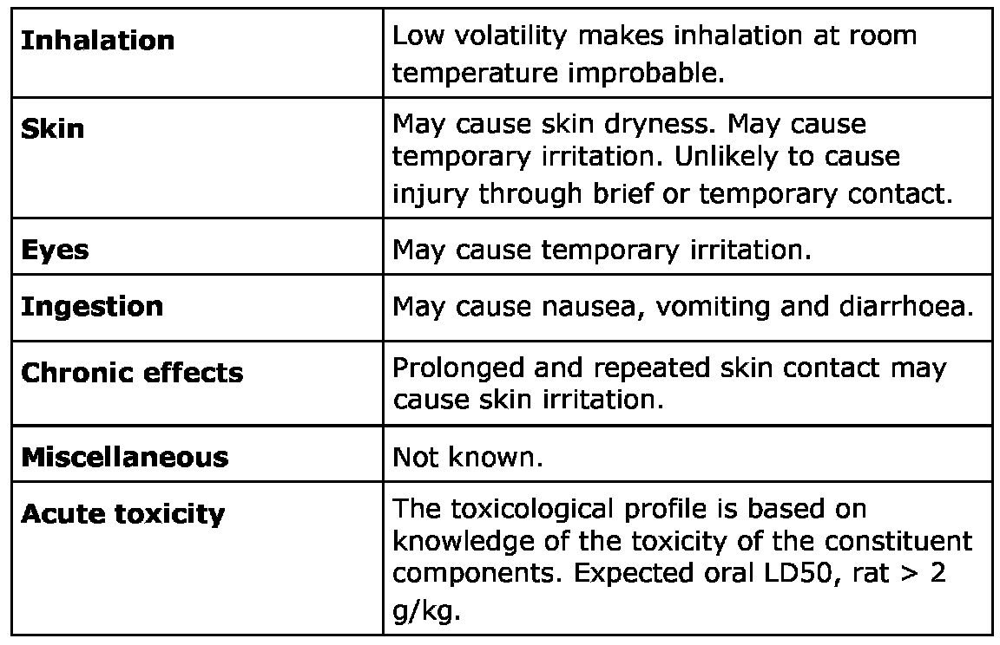
12. ECOLOGICAL INFORMATION
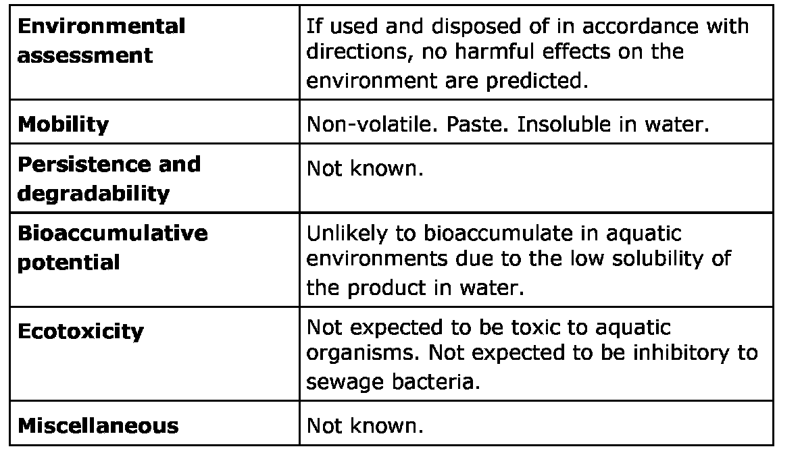
13. DISPOSAL CONSIDERATIONS
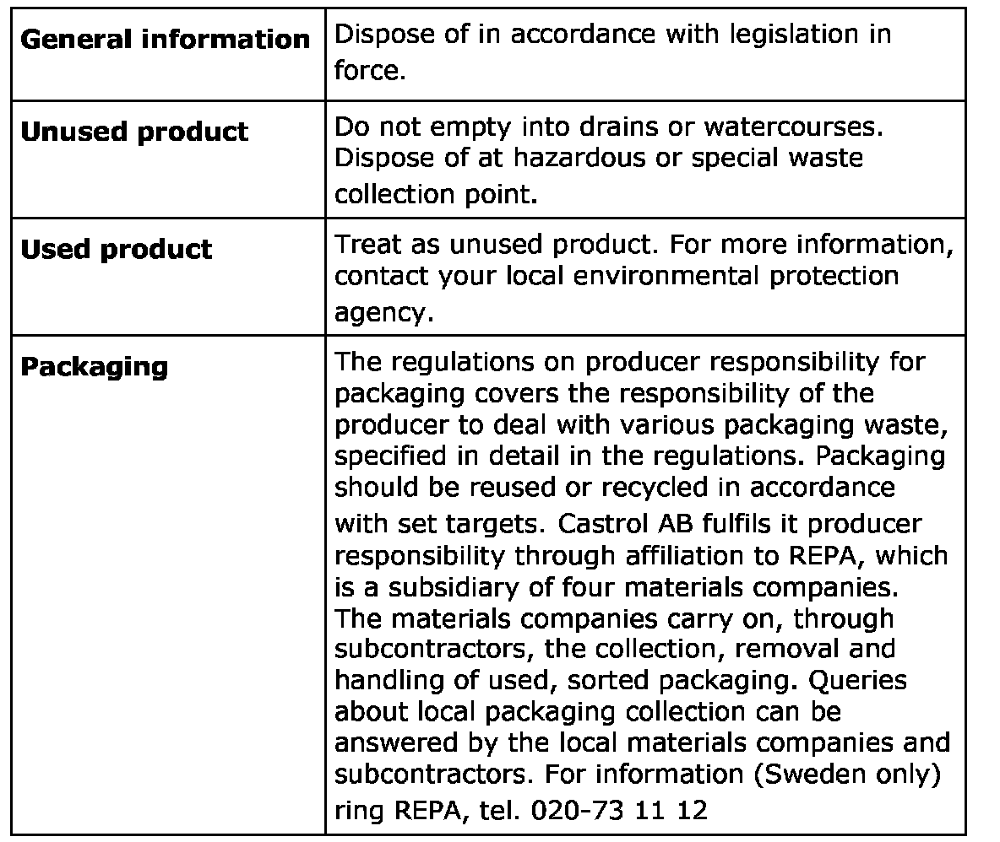
14. TRANSPORT INFORMATION
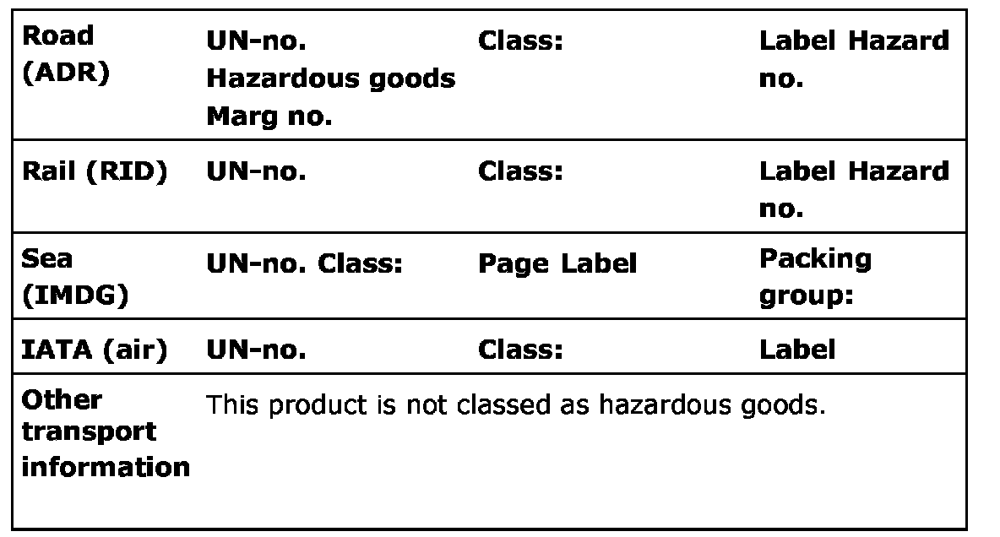
15. REGULATORY INFORMATION
16. OTHER INFORMATION
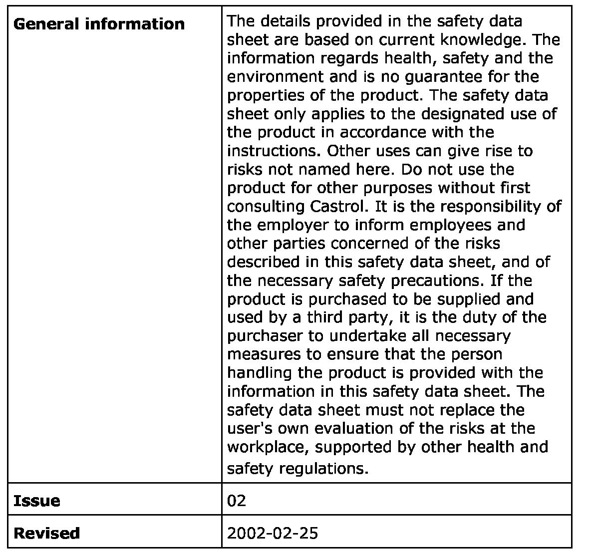